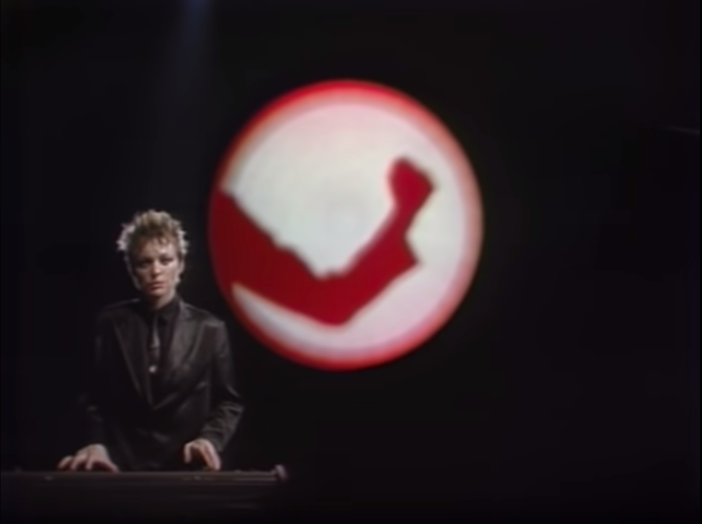

The Void
The Void operates as a dumping ground for my impermanent interest. Though fleeting, these motes of datum are nevertheless worthwhile to record, for posterity's sake if nothing else and for a cathartic practice of organizing my thoughts at most. Enjoy the Void, explore its halls and take what you will.
Laurie Anderson
Laurie Anderson tells stories. I visited Laurie Anderson's gallery at the Hirshhorn modern art museum in February 2022; her work and personality are singularly fascinating to me. Her work is so vast and all-encompassing: music, painting, sculpting, coding, poetry, photography, and gonzo journalism. She is the type of person whos relentless pursuit of her own interests seem less than effortless, her creative abilities seem to require no effort whatsoever. In fact, I am convinced that is very literally the case. It's people like Laurie Anderson that are gifted with an obsession that turns their mind open to the outside world, a talent so beautiful and brilliant that any onlooker is simultaneously inspired, inadequate, envious, and greatful. Though despite her intellectual prowess and her (seemingly) innate creative abilities, Laurie seems incredibly kind and self-aware of her gift. I am happy she is not humble. She inspires me to own my successes, to not shy away from applying myself to the fullest extent of my talent. I want to be like her.
Laurie's breakout moment was the song and accompanying music video O Superman.
Sludgefest
Alvin, Simon, and Theodore scaled to 16 bpm, unleashing unexpected (and unwanted) grunge and grit. A disturbing and fascinating manipulation of music.
Umami